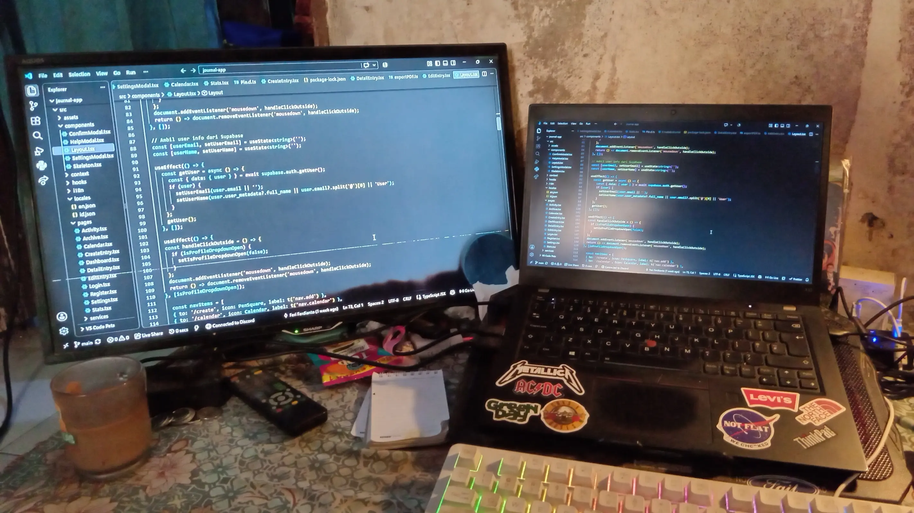
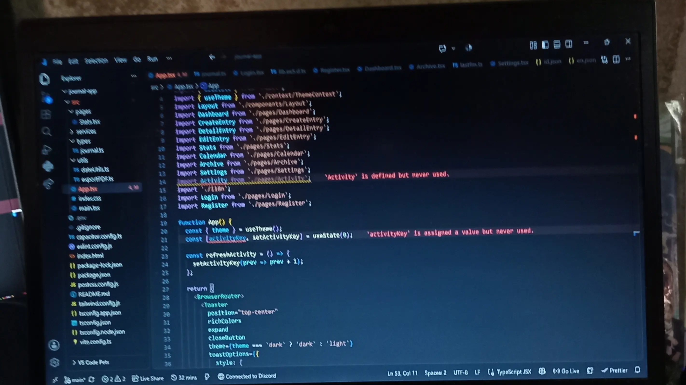
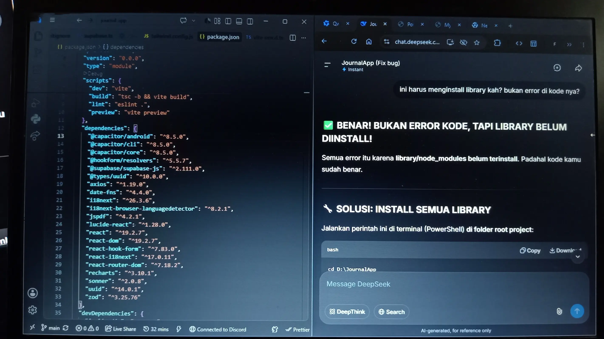

Halo! Perkenalkan, nama saya Feri Ferdianto. Saya adalah siswa SMKN 5 Malang jurusan PPLG (Pengembangan Perangkat Lunak dan Gim).
Saya sangat tertarik dunia teknologi digital dan terutama di bidang Web Development. Karena saya suka mencari solusi disaat mengubah baris kode, fungsi kode atau bereksperimen, disaat saya membuat suatu projek atau memperbaiki error disuatu baris kode tersebut. Dan Saat ini saya juga terus mengembangkan kemampuan di bidang web development dengan mempelajari dan mengembangkan project menggunakan TypeScript, React, Tailwind CSS, Astro, dan Supabase.
Sudah berbulan-bulan dan sampai sekarang, saya berusaha mencoba membuat dan mengembangkan projek sederhana sebanyak mungkin dan mengasah dan mencari solusi error di baris kode tersebut dan terus memperbaikinya.


Seiring belajar dan proses pembuatan projek, saya mencoba untuk memakai teknologi modern seperti Typescript berbasis JavaScript dengan tambahan sintaks tipe data yang kuat, karena bahasa pemograman itu saya pelajari sendiri yaitu tidak boleh memakai Tipe data yang tidak ada di Tipe data kita buat.
Coding bukan hanya soal mengetik sintaks, tapi memecahkan masalah yang rumit dan kompleks. Di era modern ini, kehadiran AI sangat membantu saya untuk lebih cepat menemukan penyebab error dan memahami alur logika yang salah. Namun, pada akhirnya, saya tetap harus memahami setiap solusi yang diberikan — karena AI adalah alat, bukan pengganti pola pikir engineer

Pencapaian yang pernah saya kerjakan di kursus online.
Belajar Dasar AI
Intro to Machine Learning
Claude Code 101
Jika ada masukan dan kritik, kirim di form berikut


MEDIA SOSIAL
Platform yang saya gunakan dan terkadang aktif dibeberapa saja.